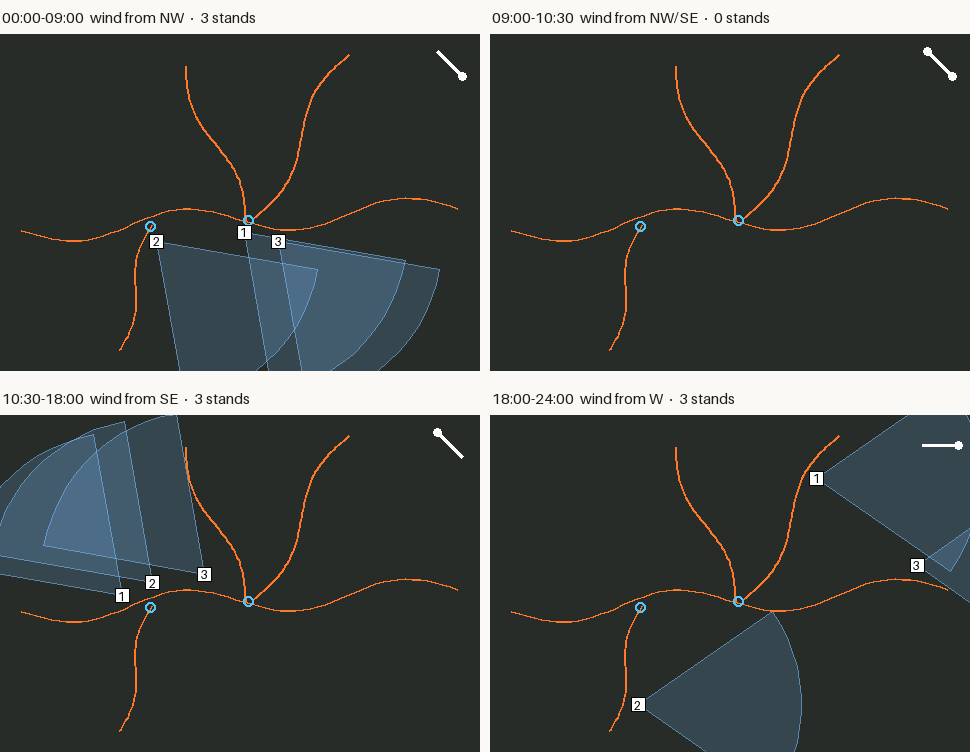
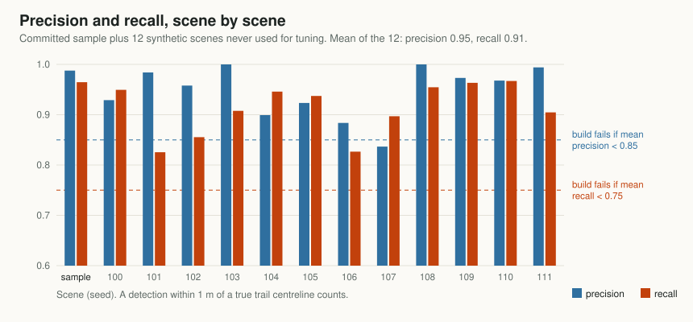

Project 03 · Image processing
Finding game trails from the air, without AI
Game trails are thin, winding lines of packed dirt. From 80 metres up, a drone can see them. Here's how a handful of classic image filters turn an off-season map into trail lines and funnels you can load into your mapping app, and how to tell whether it actually works.

Read the law first
Before anything technical: many provinces and states restrict using aircraft, drones included, to locate, track or hunt game. The restrictions are often tied to a window before and during the season, and some places ban it outright. Aviation rules add their own limits on where, how high and how far you can fly.
What this tool is for. Off-season habitat mapping on land you have permission to fly, under your aviation authority's rules. Check your hunting regulations before you fly, and again before you hunt.
What a trail looks like from above
A drone flying at 60 to 120 metres with an ordinary camera captures a few centimetres of ground per pixel. Free software like WebODM stitches hundreds of overlapping photos into one big, map-accurate image called an orthomosaic.1 At that resolution, a well-used deer trail 20 to 60 centimetres wide is a line three to ten pixels across.
Look at enough of these images and three things give trails away:
- Less green. Trampled plants and bare dirt reflect less green and slightly more red than the vegetation beside them.
- Long and thin. A trail is many times longer than it is wide. A dry patch, a bush or a deer bed isn't.
- It winds. Animals follow terrain and cover, so trails curve around obstacles and along contours. Fences, ATV tracks, pipelines and survey cuts run straight.
None of those needs machine learning to measure. Each one maps onto a well-understood image-processing step, and the pipeline is just those steps in order.
A trail is less green, long and thin, and it winds. Each property becomes one filter.
Step 1: less green
Farm and forestry imaging often uses near-infrared cameras to measure plant health. Trail Finder sticks to ordinary RGB, because that's what most drones carry. The standard RGB-only measure is Excess Green, worked out for every pixel:2
A raw ExG map has a problem: it also changes slowly across the image, from a drier hillside, a patch of different grass or the shadow of a cloud. Those slow changes would swamp the narrow dip a trail makes. So the tool subtracts a heavily blurred copy of the map from itself, which leaves only local dips in green: places noticeably less green than their surroundings.
Step 2: long and thin
The trail signal is still full of blobs: bare patches, bushes' shadows, the odd rock. What makes a trail different is its shape, and the tool for finding shapes like that is a ridge filter.
Picture the trail signal as a landscape, with trails as long, low ridges. Along a ridge the height barely changes. Across it, the height drops off sharply on both sides. Mathematically, that's about the image's second derivatives, captured in a 2×2 matrix at every pixel called the Hessian. Its two eigenvalues measure the curvature in the sharpest and gentlest directions. A line has one large curvature (across) and one near zero (along). A blob is curved in every direction, and flat ground in none.
The Sato filter turns that into a single "how line-like is this pixel" score.3 It was designed to find blood vessels in medical scans, which have exactly the same shape problem. Trail Finder runs it at three widths, about 0.3, 0.6 and 1 metre, and keeps the strongest response. That way both narrow deer trails and wider, well-worn ones are picked up.
Step 3: from pixels to lines
A threshold turns the filter output into "trail or not" for every pixel. A single threshold is a bad compromise: set it high and faint stretches of real trail break up; set it low and random speckle gets in. So the tool uses two (hysteresis). Pixels above the high threshold start a trail. Pixels above only the low threshold are kept if they connect to one that's above the high threshold. A faint stretch of a strong trail survives; an isolated faint speck doesn't.
Next, skeletonization thins every detected strip to a line one pixel wide along its centre. That turns a blotchy mask into a network of paths that can be measured, simplified and exported as map lines. Two clean-ups follow: twigs shorter than 2 metres are pruned off the network, and whole pieces shorter than 15 metres are dropped, because real trails go somewhere.
Step 4: it winds
This is the step that makes the difference. A fence line or a two-rut ATV track can look exactly like a trail in colour: a narrow strip of different vegetation. In the test images they're made that way on purpose, so straightness is the only clue.
The tool runs a probabilistic Hough transform on the skeleton, a classic method that finds straight line segments by letting every pixel vote for the lines it could lie on.4 Any straight run longer than 20 metres that never strays more than 15 centimetres from its line is treated as man-made. Then every piece along that line, across the whole image, is removed.
That last rule came from a failure. An earlier version judged each piece of skeleton on its own: is this branch straight? But wherever a trail crosses a fence, the skeleton splits the fence into short pieces at the crossing. Each short piece was too short to look convincingly straight, and fence fragments leaked through. Removing the entire line fixed it.
The cost is a known blind spot: a game trail that runs dead straight for 20 metres, along a fence for instance, gets thrown out with the fence. The 20-metre length is a setting you can raise if that's common where you hunt.
Step 5: funnels and confidence
Where three or more trails come together within about 6 metres, the tool marks a meeting point. On the ground, these are the funnels, creek crossings, saddles and fence gaps that concentrate movement. They're often the best stand sites on the whole map, and the hardest to spot by eye in a big image.
Each trail line then gets a confidence score from three things: how strongly the ridge filter responded along it, how long its connected network is, and how many meeting points it runs into. The GeoJSON output lists lines in confidence order, with the meeting points as separate features. That's a ranked list of places to walk, not a guarantee, and the score is a ranking rather than a probability.
From trails to stand sites
A trail map is a list of places deer walk. The next question is where to sit, and the answer changes through the day with the wind. A stand that's perfect while the wind comes from the northwest can blow your scent straight down the funnel once the afternoon thermals turn it around. standsites.py takes the trails and meeting points and a set of wind windows, and suggests stands for each window.

- Candidates. Every point 10 to 30 metres from a trail: close enough to shoot, not so close you're on top of it. Each is scored by how much trail lies within range, with a bonus for each meeting point.
- Scent cone. For each window, the wind carries scent downwind in a cone 25 degrees either side, plus 10 for swirl, out to 150 metres. A candidate is rejected if more than 2 metres of trail, or any meeting point, falls inside it.
- Pick. The best few safe stands per window, at least 30 metres apart, plus any that stay clean all day.
The wind windows can be typed in, or read from a SlopeShift forecast. SlopeShift learns how long after first direct sun the thermals switch at a particular stand, then predicts the switch for coming days, with an earliest-to-latest band. That band becomes an "either" window: a stand only counts as safe if it's clean for both directions. In practice that often means there's no safe stand during the switch, which is useful to know before you walk in.
A window with no safe stand is an answer too: don't be walking in during the switch.
What already exists. Several hunting apps draw a scent cone from the forecast wind for a stand you place yourself, including HuntStand, ScoutLook and HuntWise.5 This works the other way round: it proposes the stands, from trails found in your own imagery, and can use wind measured at the stand instead of a regional forecast. We didn't find a tool that does that. The scent model is deliberately simple, a straight cone, and real scent eddies around cover and terrain, so treat the suggestions as places to look on the ground.
Measuring it honestly
To know whether a trail finder works, you need images where the true trails are known exactly. Hand-labelling real drone maps is slow and was out of reach for a first version, so the project renders synthetic ones. make_sample.py draws an aerial meadow with textured grass, brush, dry patches and tree crowns with shadows. It adds five faint winding trails, three of which meet at a funnel, plus a fence and an ATV track. It also writes the true trail lines to a file.
A detected point within 1 metre of a true trail's centreline counts as correct. Two numbers summarize each scene:
- Precision: of the trail length the tool reported, how much was real.
- Recall: of the real trail length, how much the tool found.

| Scenes | Precision | Recall | Fence/ATV kept | Funnel found |
|---|---|---|---|---|
| Committed sample | 0.99 | 0.96 | 0% | 0.2 m off |
| 12 fresh scenes, mean | 0.95 | 0.91 | 7% worst | all within 3.5 m |
Those numbers are good, and they flatter the tool, for a simple reason: the same person wrote the scene generator and the detector. Whatever the generator gets wrong about real fields, the detector was never asked to handle. Real imagery has tall grass hiding trails, cattle paths, wind-flattened crops, deer beds and stitching seams. Expect lower numbers on a real flight until the settings are tuned on real data.
The synthetic numbers are a floor for the code's correctness, not a forecast for your field.
Flying for trails
- Season. Late fall after leaf drop, or early spring before green-up. Vegetation is low, nothing is overhead, and trails are worn in from the season. A dusting of snow can make trails stand out even more.
- Light. Overcast skies or a high sun give the most even colour. Long, low-sun shadows can hide real trails and draw fake ones.
- Height and overlap. Aim for 2 to 5 centimetres per pixel, typically 60 to 100 metres on a consumer drone, with 70 to 80 percent overlap between photos so the stitching software has enough to work with.
- Scale. For a GeoTIFF, the tool reads the ground resolution and map coordinates from the file. For a plain JPG or PNG, pass the resolution with
--gsdin metres per pixel. - Size. Allow about 2 seconds and 120 MB of memory per megapixel, and crop orthomosaics over about 20 megapixels into tiles.
- Then walk it. Treat the output as a ranked list of places to check on foot. Confirm with tracks, droppings or a Trail Tally counter.
Limits, and when to bring in AI
- Synthetic tests only so far. Results from a real flight, with notes on what it found and missed, would be the most useful contribution.
- Trees hide trails. Anything under canopy or deep shadow is lost. A trail broken into pieces under 15 metres disappears, and meeting points under trees get missed for the same reason.
- Straight trails get dropped with the fences, as described above.
- Confidence is a ranking, not a probability.
A neural network would probably beat these filters on real imagery eventually. It would also need a few hundred hand-labelled trail segments from real flights before it could learn anything. The plan is to collect those first, then train a small segmentation network (a U-Net with a lightweight MobileNet encoder) that runs on a laptop CPU. It would be scored with the same evaluation, so it has to beat the classic pipeline on equal terms before it replaces it.
Notes
- WebODM and the underlying OpenDroneMap are free, open-source photogrammetry tools that turn overlapping drone photos into orthomosaics and elevation models. ↩
- Excess Green was introduced for separating plants from soil in colour images: D. M. Woebbecke et al., "Color indices for weed identification under various soil, residue, and lighting conditions," Transactions of the ASAE 38(1), 1995. ↩
- Y. Sato et al., "Three-dimensional multi-scale line filter for segmentation and visualization of curvilinear structures in medical images," Medical Image Analysis 2(2), 1998. Trail Finder uses the scikit-image implementation. ↩
- The probabilistic Hough transform: J. Matas, C. Galambos and J. Kittler, "Robust detection of lines using the progressive probabilistic Hough transform," Computer Vision and Image Understanding 78(1), 2000. Implemented in scikit-image as
probabilistic_hough_line. ↩ - For example HuntStand's scent cone, ScoutLook's scent-cone graphic (Mossy Oak/ScoutLook) and HuntWise WindCast. ↩